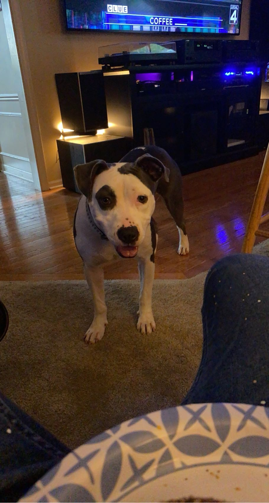

John
John, the storyteller, weaves the tapestry of "Paws on the Path," capturing Bramble's essence and inviting readers into her world of discovery.
Join Bramble Jam, a spirited and curious Pitbull Terrier, on her remarkable journey home. Dive into her world to explore the wonders of canine senses, emotions, and intelligence. Embark with Bramble Jam on a tale of resilience, curiosity, and the power of unyielding bonds. "Paws on the Path" isn't just a story; it's an experience waiting to unfold.
In 2021, Bramble Jam, a spirited Pitbull Terrier, bounded into our lives, becoming the heart of our family and the inspiration behind "Paws on the Path". Her adventures and our shared experiences, brimming with joy, challenges, and laughter, not only deepened our bond but also illuminated the profound connections possible between humans and their canine companions. Through this book, we aspire to share those insights and inspire others with the indomitable spirit of friendship, resilience, and love that Bramble embodies.
John, the storyteller, weaves the tapestry of "Paws on the Path," capturing Bramble's essence and inviting readers into her world of discovery.
The nurturing heart of our home, Sharon's connection with Bramble transcends the ordinary, teaching her about love and trust in their serene garden sanctuary.
Jeff, the unwavering pillar, guides Bramble through life's complexities with patience and wisdom, fostering her transformation into a confident explorer.
Dean's adventurous spirit mirrors Bramble's own. Together, they discover the magic in the mundane, embracing the world as their playground.
Embark on an adventurous journey with Bramble Jam, exploring the intricacies of canine cognition and behavior as they navigate their way back home.
Discover how Bramble Jam and other dogs may share and understand emotions with humans and animals alike, revealing a deep, empathetic connection.
Learn moreExplore the mechanisms behind the social learning skills of dogs like Bramble Jam, who adeptly navigate through learning from both human and animal interactions.
Learn MoreDive into groundbreaking studies that reveal the depths of canine intelligence, from understanding human facial expressions to processing complex emotions.
Learn MoreExplore the profound emotional bonds between dogs and humans, highlighting canine capabilities in mirroring human emotions and social cues.
Learn MoreDiscover the intricate world of canine scent, exploring how dogs perceive, communicate, and interact through their remarkable sense of smell.
Learn MoreJourney into the complex mind of Bramble Jam, a spirited Pitbull Terrier, and discover the world from her perspective. This section illuminates the cognitive and emotional landscape unique to her breed, blending scientific insights with the heartwarming adventures of our canine heroine.
Explore Bramble's WorldElevate your Home or Business, Explore curated collections that contribute to the Humane Society. Discover history, adventure, and fun while supporting a noble cause.

Your direct donation helps the Humane Society protect and care for animals in need. Every contribution makes a significant impact.

Grab your copy of "Paws on the Path" and join Bramble Jam on her adventures.
Hurry, offer ends soon!
Dive deep into Bramble Jam's world and experience her adventures first-hand. Grab your copy of "Paws on the Path" now and unlock the secrets of canine minds.